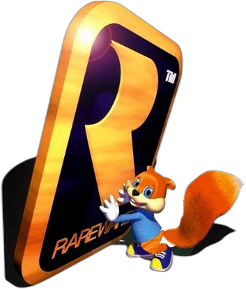
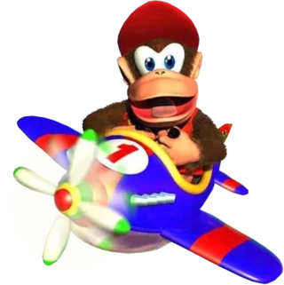
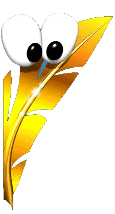

CyStation

Cyiatic’s corner of the Nintendo 64: 480i patches, renders rescued from the archive, and a record of everything in between.
Out now

480i Patches
Two patches are out. Five more are in the works, none with a public build yet: Conker’s Bad Fur Day, Diddy Kong Racing, Yoshi’s Story, F-Zero X and Killer Instinct Gold.

Render Restore
Game renders recovered from ROMs and magazine scans, filed with their sources. Newest: seven skyboxes from Conker’s Bad Fur Day, pulled from the retail ROM. Above is Windy by day.

Timeline
Every project since 2015: Smash Bros. mods, Xbox homebrew, Internet Archive uploads, and the patches above.